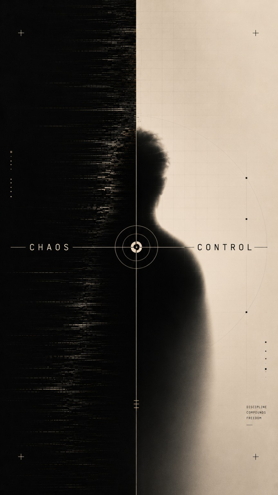

01 / See
Make the pressure visible.
Stop treating every problem as equally urgent. Find the active constraint first.

A STRATEGIC SYSTEM FOR
HUMAN AUTONOMY
CLARITY TODAY.
A DIFFERENT TOMORROW.
Why Exit exists
Exit Framework is a practical operating system for people whose attention, capacity, obligations or environment create more friction than willpower can solve. It turns instability into a sequence: see what is happening, reduce the load, choose one move, measure what changed, and adjust.
01 / See
Stop treating every problem as equally urgent. Find the active constraint first.
02 / Stabilize
A useful system still works on reduced-capacity days. Scope changes before standards collapse.
03 / Execute
One bounded action with a visible finish line creates more control than another perfect plan.
Start here / Post #001
The foundational field note: how chaos, complexity and control theory became a practical framework for rebuilding agency in unstable reality.
Three free tools
The open sequence is deliberately complete enough to improve one real day. No account is required.
Observe
Six short questions identify the strongest pressure and one useful next move.
Run the Chaos Audit →Stabilize
Turn actual capacity into a smaller 24-hour operating plan that protects the base.
Build an MVD →Execute
Choose one bounded action, define done, cap the block and stop when the mission is complete.
Build a Daily Mission →After the free sequence
The full Exit OS continues with the 30-Day Control Sprint, Weekly Control Review, Command Center and implementation templates. Control Room adds the ongoing cadence around the system.
Control Room
NOK 690 / monthRecurring implementation briefings, structured reviews, planning systems, templates, release notes and new modules as the OS evolves.
Field notes
Operational writing, not filler. Every field note should clarify a mechanism or lead to a usable tool.
Human Autonomy Study is a separate research initiative. Exit Framework is the practical commercial system. A purchase never buys, bundles or guarantees research participation.
Visit Human Autonomy Study →Recruitment, suitability, consent and research governance remain independent from Exit Framework commerce.
Next move
Start with the free sequence. Decide about the full system after it has earned the right to ask.